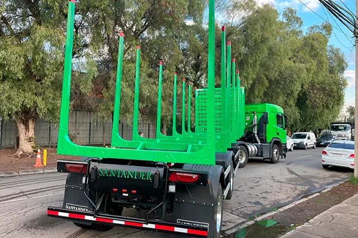

Carga general
Carga general
Speed Sider
Sider de carga lateral rápida
- Largo
- 12.400 a 15.800 mm
- Alto
- 2.700 a 3.000 mm
- Cortinas PVC 900 g/m² sellado por alta frecuencia
- Pilares intermedios desmontables

Semirremolque · Carga de madera en trozos
Construido para la exigencia del rubro forestal: estacas de alta resistencia modelo ULTRAXX y cabezal de izaje reforzado, todo sobre una superestructura de acero Strenx® 700.
Descripción técnica
Strenx 700
Superestructura fabricada en acero de alta resistencia Strenx 700 de procedencia sueca marca SSAB.
Superestructura fabricada en acero de alta resistencia Strenx 700, de procedencia sueca (SSAB o Thyssen Group) placa superior fabricada en espesor de 8 mm. placa inferior de 10 mm de espesor. Alma fabricada en placa de acero en 4 mm.
Acero diamantado de 3 mm.
Fabricado en perfiles metálicos de alta resistencia, cubierta troquelada fabricada en acero Strenx 700.
Cabezal reforzado fabricado en perfiles de acero de alta resistencia Strenx 700.
Fabricado en acero de alta resistencia en espesor de 3 y 4 mm. Diseño modelo ULTRAXX.
Ejes de disco europeo con capacidad de carga de 13.000 kg. Estructura de frenado con balatas de 8" de ancho. Suspensiones mecánicas o neumáticas marca Suspensys, con capacidad de carga de 13.000 kg por puente. Llantas aro 22,5" x 8,25" de acero o aluminio.
Sistema de frenado según normativa vigente internacional CE, control eléctrico de frenado variable según carga, control de estabilidad lateral antivuelco, control inteligente de eje elevable a través de válvula diferenciadora, control de sistema de suspensión neumática, a través de válvula niveladora con celdas de carga pesos por ejes, sistema de control auxiliar y control de flota, líneas de aire blindadas de 8 y 10 mm, cámaras simples de freno de 8” y cámaras doble maxi brake, manos de acople simples frontales según normativa.
Perno Rey marca JOST de 2", con sistema apernado.
Marca JOST o similar con capacidad estática de levante de 25 toneladas con doble velocidad de levante, zapatas basculantes para suspensión neumática.
De 120 Litros
De trinquete lateral para llanta europea.
Según normativa vigente nacional, arnés principal de 7 vías sellado, enchufe eléctrico de 7 vías plástico, líneas eléctricas secundarias de posición acopladas a arnés principal con sistema CLIP.
Las especificaciones pueden variar según la configuración solicitada. Confirma los detalles con nuestro equipo comercial.
Sigue explorando
Carga general
Sider de carga lateral rápida
 Carga en pallets
Carga en pallets
 Carga en general y faenas mineras
Carga en general y faenas mineras
¿Listo para renovar tu flota?